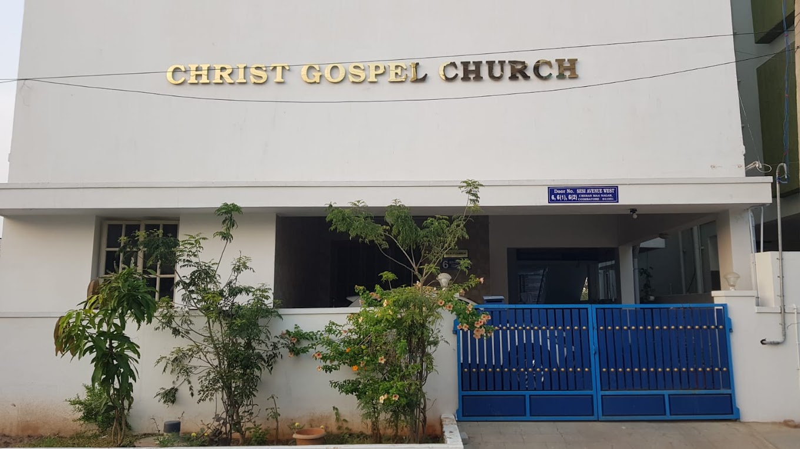
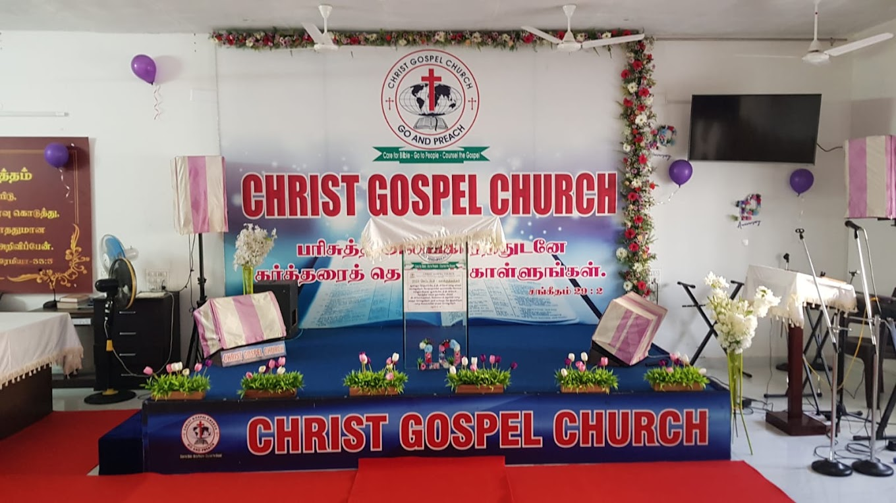

Plan your visit
Your first Sunday starts here.
New to church, new to Coimbatore, or coming back after a long time? You are welcome. Here is what you need to know.
When
Sundays, 8 to 11 AM
Address
Get directionsFinding the building
Look for the blue gates.
The church is a white building with its name across the front and a red cross on the roof. The sign by the entrance reads Door No. 6, 6(1), 6(2), Sesi Avenue West.

What to expect
How a Sunday morning goes.
Praise and worship
Sing and pray together.
Psalms
Reflection from the Book of Psalms.
The Word of God
The sermon, in Tamil.
Fellowship
Stay and greet one another.
Times are approximate, taken from recent services. They shift a little from week to week.
Inside the church


Common questions
Before you come.
Anything else on your mind? Call us. We are glad to help.
What language are the services in?
Worship and preaching are mainly in Tamil. If you do not speak Tamil you are still very welcome.
Do I need to be a member to come?
No. Everyone is welcome, whatever your background. You do not need an invitation or to register.
Can I bring my family and children?
Yes, please do. Families worship together here.
What should I wear?
Wear what is modest and comfortable for you. Come as you are.
Is there parking?
If you are coming by car or two-wheeler, call us before you leave and we will tell you where to park.
What if I cannot come in person?
Join the service live on YouTube from about 8:15 AM on Sundays. You can post prayer requests in the live chat.
Can a pastor pray with me or visit?
Yes. Speak to us after the service, phone the church, or send a prayer request through this website.